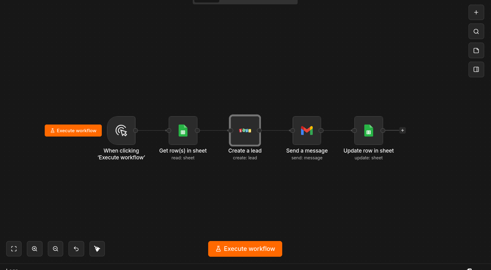

01
Systems Integration · Tally · n8n · Zoho CRM
Lead Capture Automation
Built an end-to-end inquiry automation for PLURON Studio. When a prospect submits a form, n8n instantly creates a lead in Zoho CRM and sends an email notification — zero manual entry, zero lost leads.
View Project →